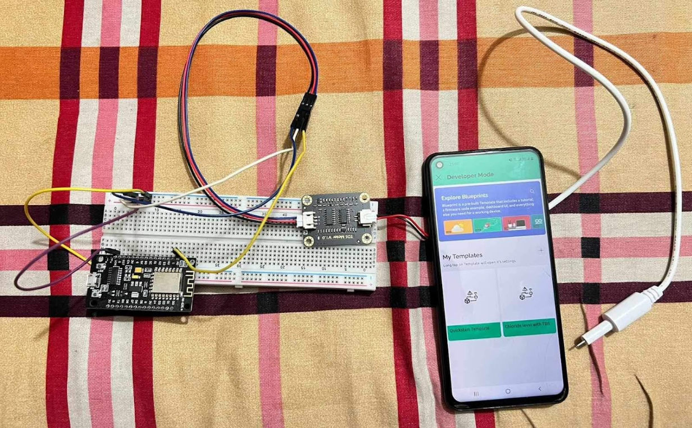
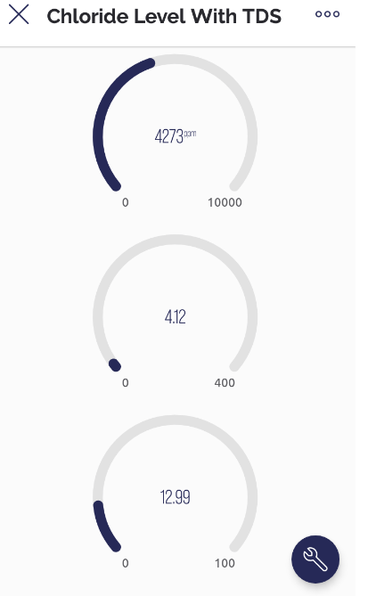
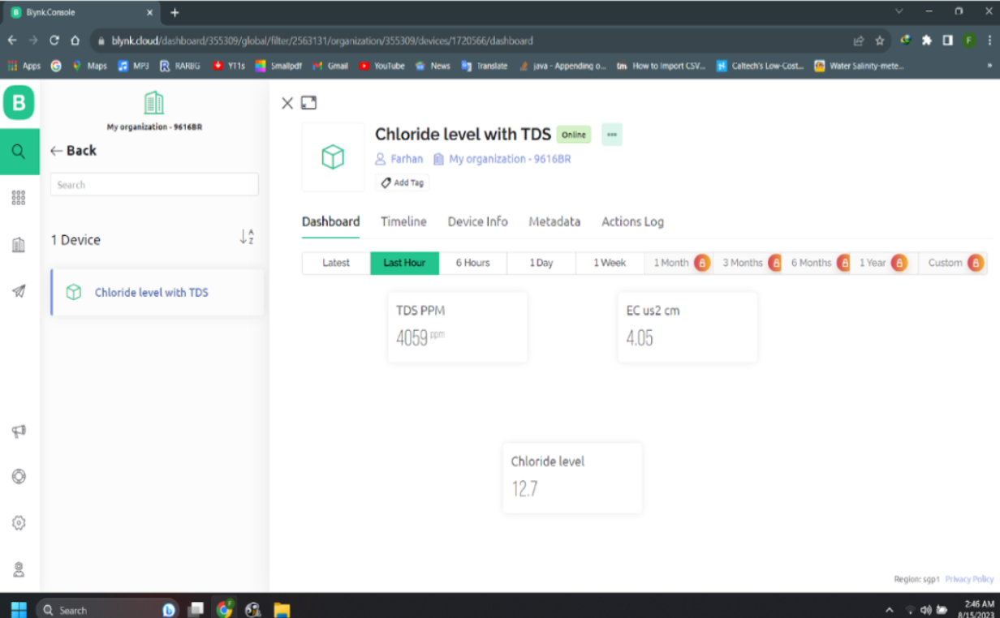

1.IoT based Sweat Analyzer To Detarmine Health Condition
The sweat analyzer project is an innovative venture aimed at revolutionizing personal health monitoring
through the precise measurement of chloride percentage in sweat. Employing cutting-edge sensor
technology,
this device provides users with a comprehensive understanding of their chloride levels, contributing to
a
more informed approach to health and wellness. The core feature of this project is the integration of a
user-friendly LCD display, ensuring that individuals can easily interpret and access their real-time
results.
This display not only offers convenience but also facilitates on-the-spot decision-making regarding
hydration
and electrolyte balance. The sweat analyzer's application spans a broad spectrum, catering to the needs
of
fitness enthusiasts, athletes, and individuals with specific medical conditions that necessitate
continuous
chloride level monitoring. To ensure accuracy, the project incorporates advanced sensors that deliver
precise
measurements, enhancing the reliability of the device. The LCD display not only showcases immediate
results
but also archives historical data, enabling users to track trends and fluctuations in their chloride
levels
over time. The emphasis on portability makes this sweat analyzer an accessible and travel-friendly
solution,
empowering users to take control of their health wherever they go. Overall, this project represents a
significant step forward in personalized health technology, offering a practical tool for proactive
health
management.



2.Star Paper Mill
This project was done on doing Object Oreiented Programming Course.Embarking on an Object-Oriented Programming (OOP)
project for Hakkanı Paper Mill's marketing strategies presented an engaging and multifaceted challenge. The project
involved the creation of distinct user logins catering to the needs of both customers and workers within the paper mill's
ecosystem. Two unique user interfaces were developed, each tailored to address the specific roles and functionalities of
the users. For customers, the system focused on providing a seamless and intuitive platform for browsing products, placing
orders, and tracking deliveries. In contrast, the worker interface was designed to streamline internal processes,
facilitating tasks such as inventory management, order processing, and production tracking. The OOP principles employed in
the project not only enhanced code organization but also ensured scalability and modularity, allowing for the seamless
integration of future features and optimizations.